Three eating styles, three different mechanisms, all with real clinical evidence behind them for diabetes management. Pick a style below to see the actual research -- the mechanism, the trial data, and an honest caveat -- then the recipes to put it into practice. 142 recipes total, full nutrition breakdown and glycemic index estimate on every one.
Cutting carbohydrate intake directly lowers the glucose load your body has to manage after every meal — which means less insulin has to be produced to handle it. For someone whose insulin response is already struggling, that's less demand on an already-overworked system. The number that actually matters here is net carbs (total carbs minus fiber), since fiber isn't broken down into glucose the way starches and sugars are — a recipe can show a higher gross-carb number and still be genuinely keto-appropriate if most of that number is fiber.
Insulin resistance isn't just about how much sugar you eat — it's heavily driven by fat that accumulates inside liver and muscle cells (not the fat you can pinch), which physically interferes with insulin's signaling. Whole-food plant-based diets measurably clear that intracellular fat, and separately improve how well pancreatic beta cells actually secrete insulin — attacking both core defects of type 2 diabetes at once, through a different mechanism than carb restriction.
Extra virgin olive oil's polyphenols (hydroxytyrosol, oleuropein) activate a cellular pathway — SIRT1 → PGC-1α — that drives your cells to build more, healthier mitochondria and reduces oxidative damage to the ones you have. That matters for diabetes specifically because mitochondrial dysfunction is now seen as a unifying cause behind both core defects of type 2 diabetes: it directly impairs muscle glucose uptake, and it blunts insulin secretion in pancreatic beta cells, which is itself a mitochondria-driven process.
 Breakfast
Breakfast
Nutty steel-cut oats topped with fresh berries and warming cinnamon.
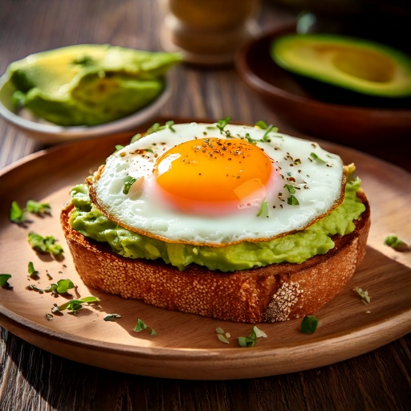
BreakfastCreamy avocado on whole grain toast topped with a perfectly cooked egg.
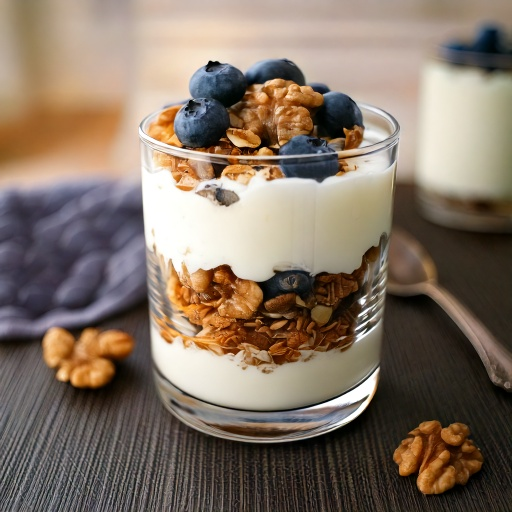
BreakfastCreamy Greek yogurt layered with blueberries, crunchy walnuts, and cinnamon.
 Breakfast
Breakfast
Baked egg frittata loaded with spinach, mushrooms, and feta — great for meal prep.
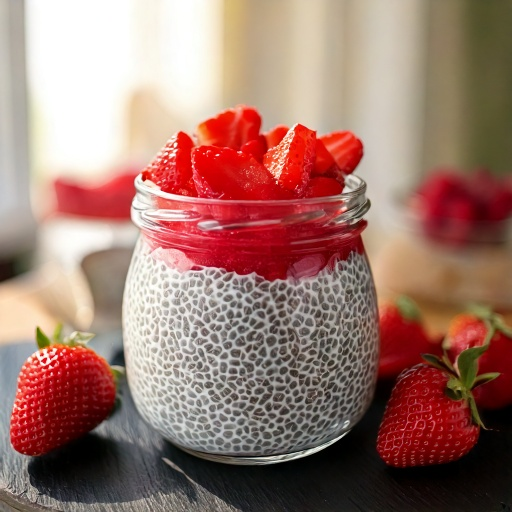
BreakfastSilky chia pudding made overnight with almond milk and topped with fresh strawberries.
Fluffy grain-free pancakes made with almond flour — low GI and satisfying.
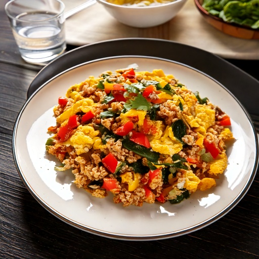
BreakfastHearty morning scramble with lean turkey and colorful vegetables.
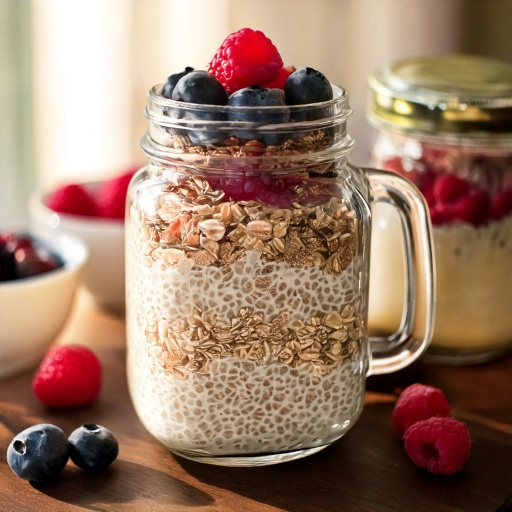
BreakfastMake-ahead oats packed with omega-3 flaxseed for a filling, blood-sugar-friendly breakfast.
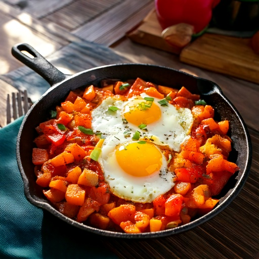
BreakfastColorful sweet potato hash with bell peppers and eggs — a satisfying weekend breakfast.
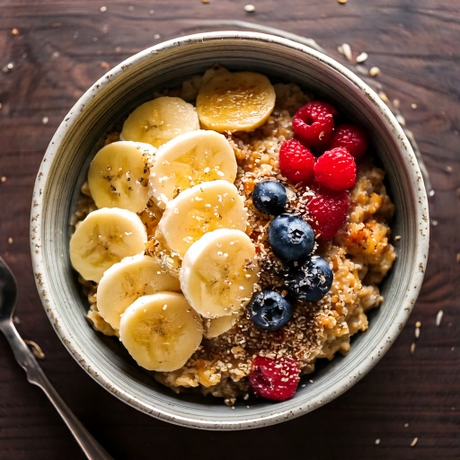
BreakfastWarm quinoa topped with almond butter, banana, and berries for lasting energy.
 Breakfast
Breakfast
Oven-baked egg muffins loaded with bacon and cheddar — a grab-and-go keto breakfast.
A classic diner omelet with ham, bell pepper, onion, and melted cheddar.
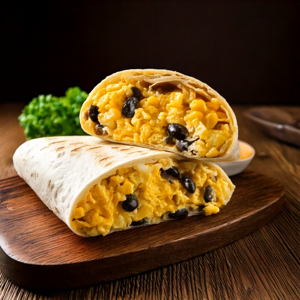
BreakfastA hearty scrambled egg, black bean, and cheese burrito wrapped up for a grab-and-go morning.
 Breakfast
Breakfast
Eggs poached in a spiced tomato and bell pepper sauce — a one-pan breakfast with real vegetables at its base.
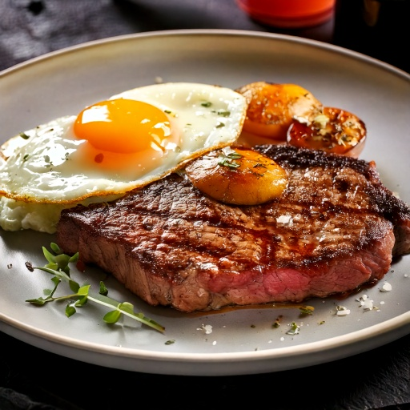
BreakfastA pan-seared steak with two eggs any style — the classic high-protein keto breakfast.
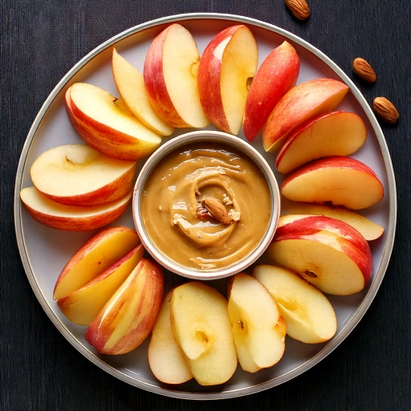
SnackCrisp apple slices with creamy natural almond butter — a perfectly balanced snack.
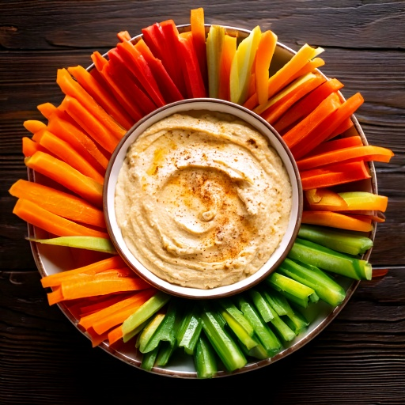
SnackCreamy hummus paired with a rainbow of raw vegetable sticks for dipping.
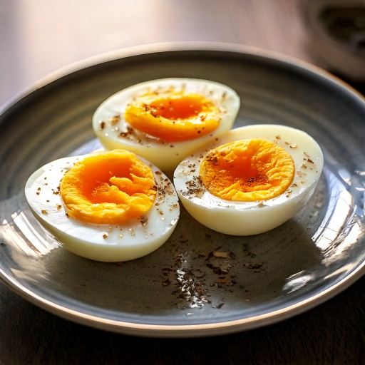
SnackSimple protein-packed hard-boiled eggs — the ultimate portable, no-spike snack.
 Snack
Snack
Steamed edamame lightly salted — high protein, high fiber, satisfying, and blood-sugar friendly.
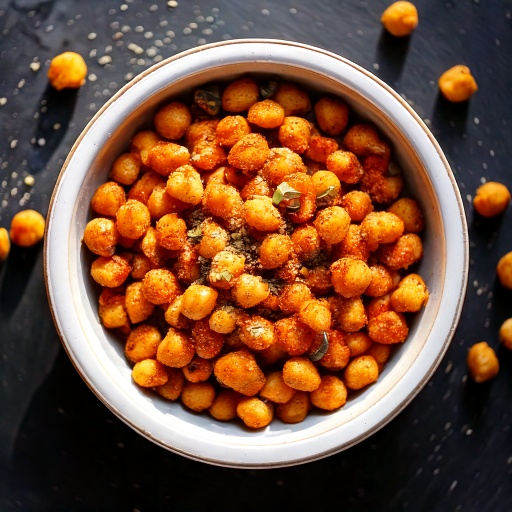
SnackCrunchy spiced roasted chickpeas — a satisfying chip alternative with fiber and protein.
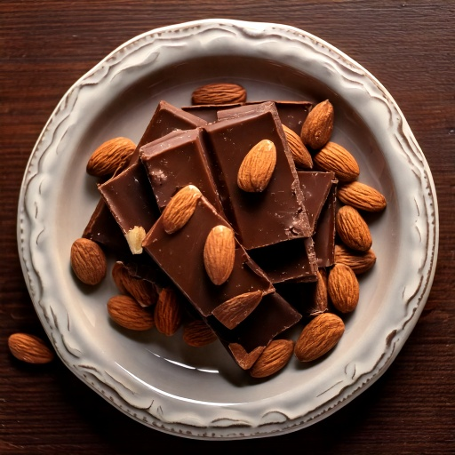
SnackA small portion of dark chocolate with raw almonds — antioxidants meet healthy fats.
Deli turkey rolled around cream cheese and cheddar — a two-minute keto snack.
 Snack
Snack
Classic creamy deviled eggs with a dusting of paprika.
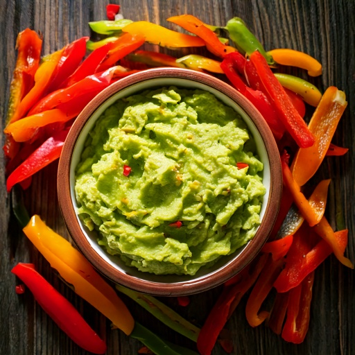
SnackFresh homemade guacamole served with crisp bell pepper strips instead of chips.
 Snack
Snack
A simple mix of nuts, dried fruit, and dark chocolate chips.
 Snack
Snack
Mini mozzarella balls, cherry tomatoes, and basil on a skewer with balsamic glaze.
 Snack
Snack
A portable, no-prep pairing of no-sugar-added beef jerky and raw almonds.
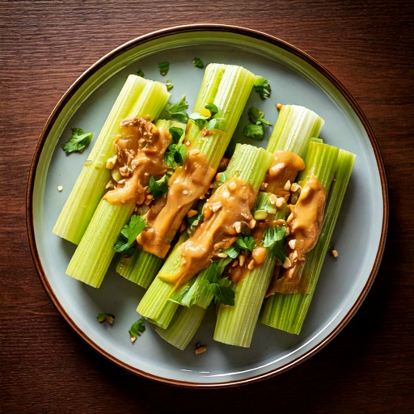
SnackClassic ants on a log — celery sticks filled with natural peanut butter.
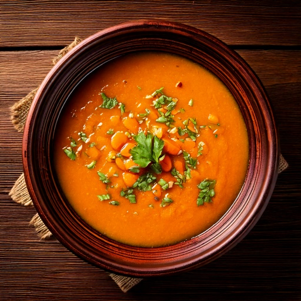
LunchWarming red lentil soup with cumin and turmeric — rich in fiber and plant protein.
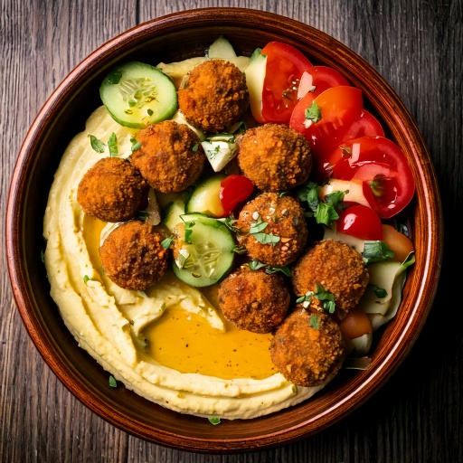
LunchCrispy baked falafel over greens with hummus, veggies, and a tahini drizzle.
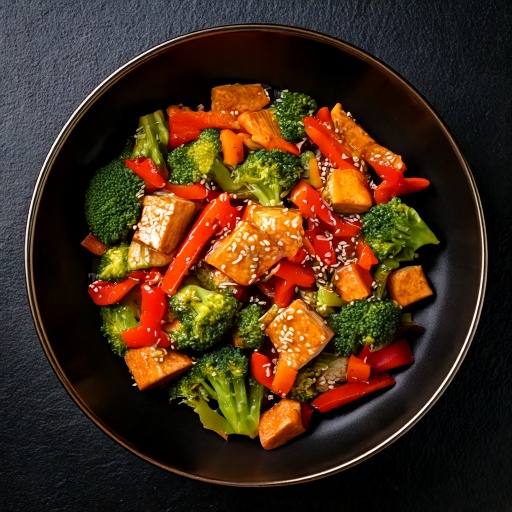
DinnerCrispy pan-fried tofu tossed with broccoli and bell pepper in a garlic-soy sauce.
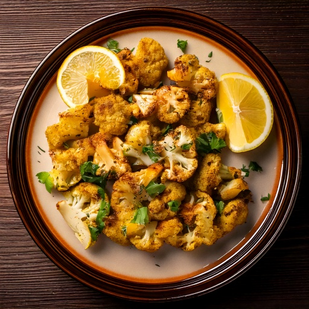
SideGolden roasted cauliflower with garlic and lemon — a versatile low-carb side.
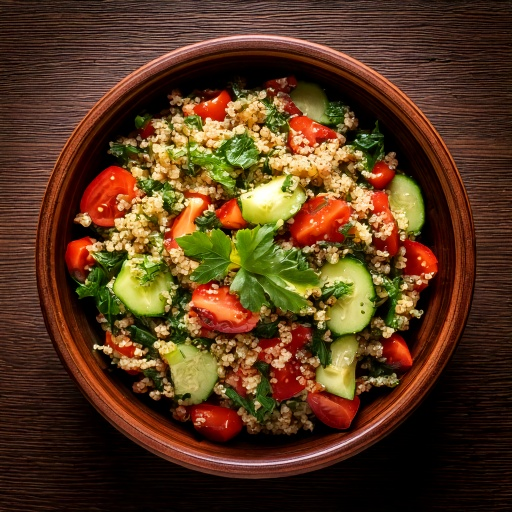
LunchRefreshing Middle Eastern salad swapping bulgur for quinoa for added protein.
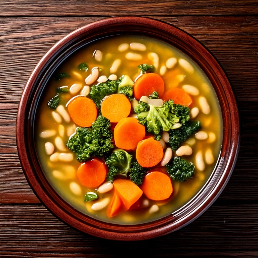
LunchHearty Italian white bean soup with kale — filling, fiber-rich, and blood-pressure friendly.
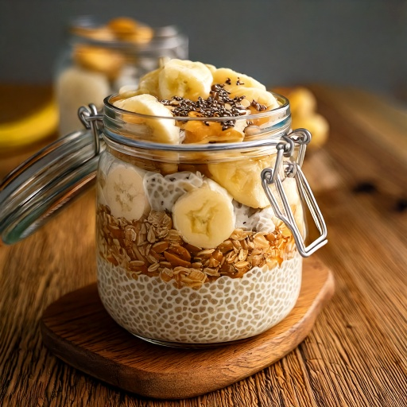
BreakfastNo-cook oats soaked overnight with peanut butter, banana, and chia.
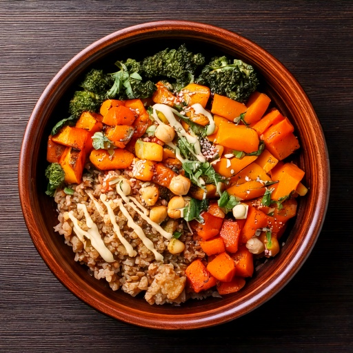
LunchA colorful bowl of quinoa, roasted chickpeas, sweet potato, and kale with tahini dressing.
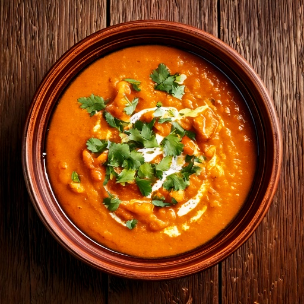
LunchWarmly spiced red lentils simmered with coconut milk and garam masala.
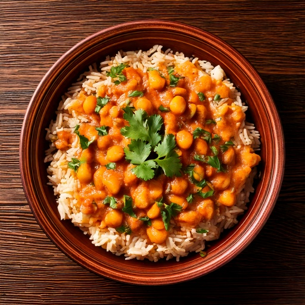
DinnerChickpeas simmered in a spiced tomato-coconut curry sauce, served over rice.
 Side
Side
Fluffy herb-seasoned quinoa pilaf cooked in vegetable broth — a protein-rich grain side.
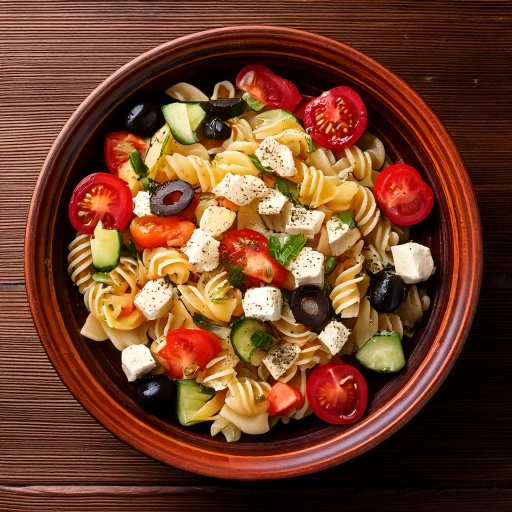
LunchCold pasta salad with feta, cucumber, olives, and a bright lemon-herb dressing.
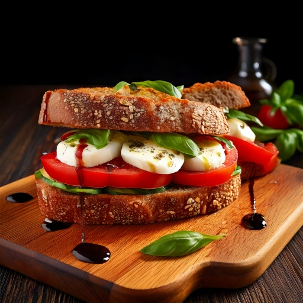
LunchFresh mozzarella, tomato, and basil on crusty bread with a balsamic drizzle.
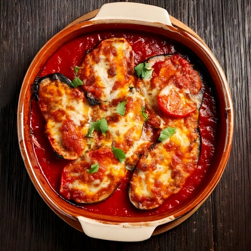
DinnerBreaded eggplant layered with marinara and melted mozzarella.
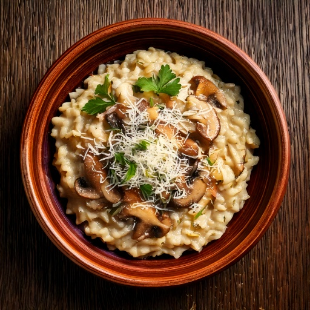
DinnerCreamy arborio rice slowly simmered with mushrooms, parmesan, and white wine.
 Breakfast
Breakfast
Make-ahead egg muffins with chickpea flour, spinach, and feta.
 Lunch
Lunch
Cucumber, tomato, red onion, olives, and feta in a simple olive oil and red wine vinegar dressing.
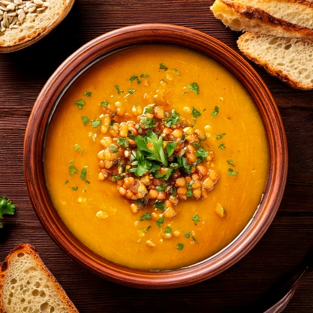
LunchA hearty brown lentil soup simmered with carrot, celery, and tomato, finished with a splash of vinegar.
 Dinner
Dinner
Salmon fillets rubbed with garlic and dill, baked until flaky, and finished with fresh lemon.
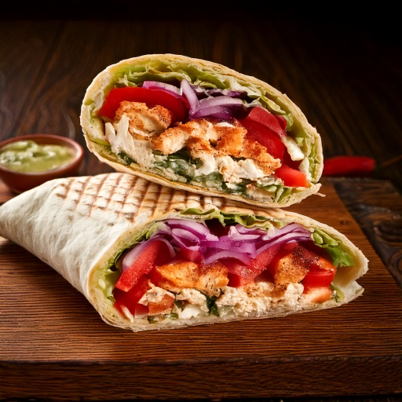
LunchLemon-oregano marinated grilled chicken wrapped in whole wheat pita with tzatziki, tomato, and onion.
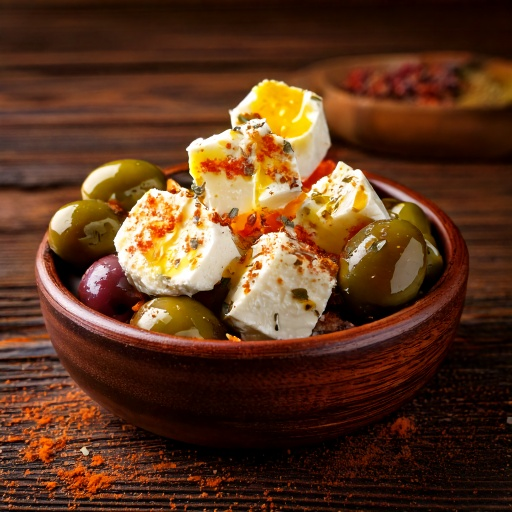
SnackMixed olives and feta marinated in olive oil, lemon zest, and chili flakes.
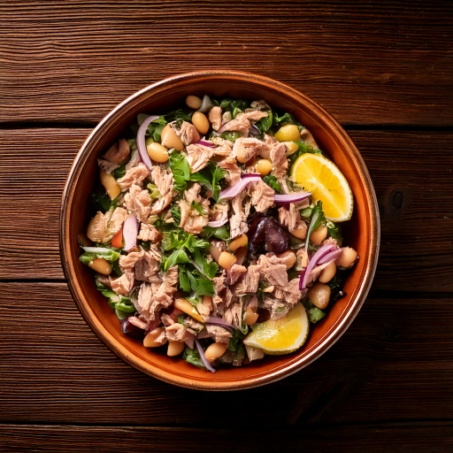
LunchCanned tuna and cannellini beans tossed with red onion, parsley, and lemon.
 Dinner
Dinner
Chicken thighs braised with chickpeas, tomato, apricots, and warm spices.
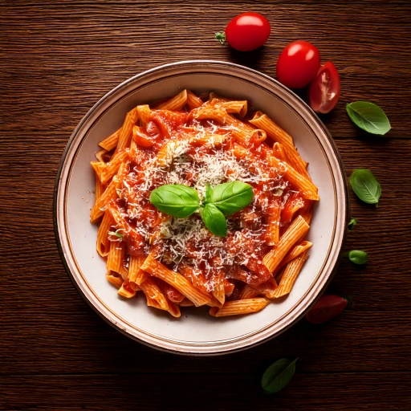
DinnerWhole wheat pasta in a simple San Marzano tomato and basil sauce.
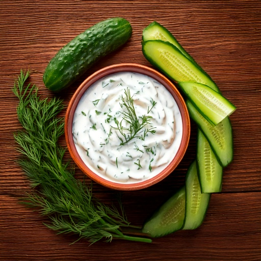
SnackCool Greek yogurt dip with grated cucumber, garlic, and dill, served with fresh cucumber sticks.
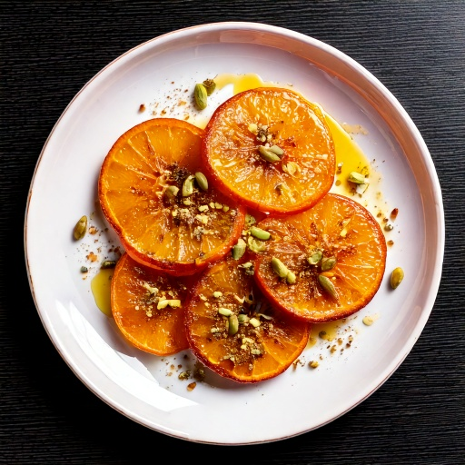
SnackBroiled orange slices dusted with cinnamon and topped with pistachios and a light honey drizzle.
Rolled oats soaked overnight with Greek yogurt, chopped dried figs, and sliced almonds.
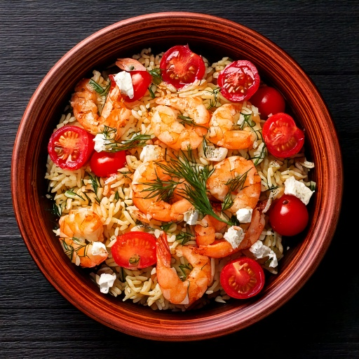
LunchWhole wheat orzo tossed with shrimp, cherry tomatoes, feta, and fresh dill in a lemon-olive oil dressing.
 Dinner
Dinner
Bell peppers stuffed with spiced ground lamb, rice, tomato, and fresh mint, baked until tender.
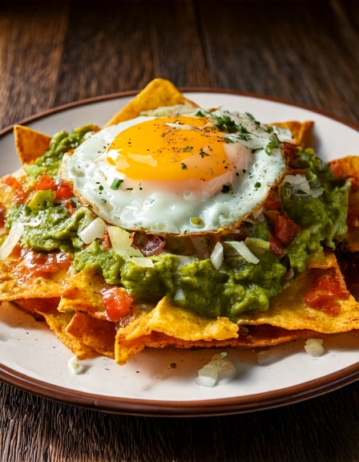
BreakfastCrispy tortilla chips simmered in tangy green salsa, topped with a fried egg and queso fresco -- a real Mexican breakfast classic, baked instead of fried to keep it lighter.
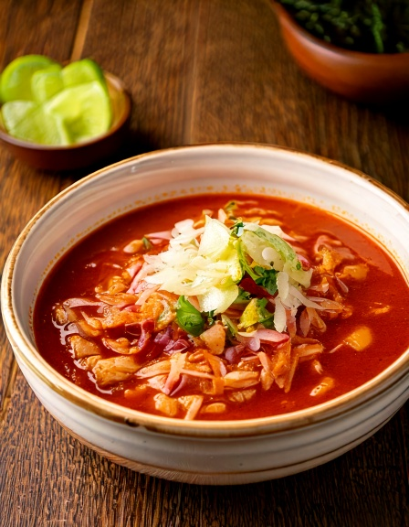
DinnerA rich, slow-simmered red chile pork and hominy stew -- real Mexican comfort food, topped fresh with cabbage, radish, and lime for crunch and acidity.
 Lunch
Lunch
Baja-style grilled fish tacos with cabbage slaw and a light lime crema -- real Baja California street food, grilled instead of fried to keep it lighter.
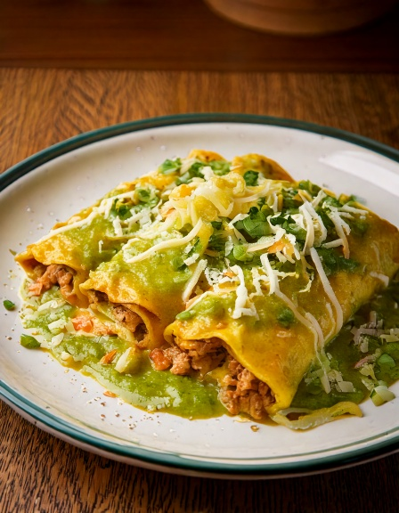
DinnerCorn tortillas rolled around shredded chicken, bathed in tangy tomatillo salsa verde and melted cheese -- a real Mexican family dinner staple.
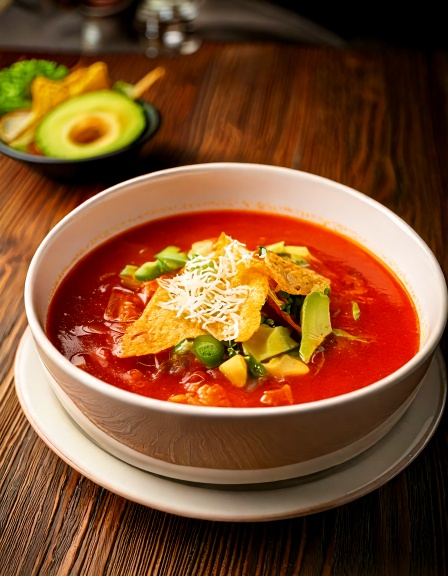
LunchA brothy tomato-chile soup with crispy tortilla strips, avocado, and queso fresco -- real Mexico City comfort food, light but satisfying.
 Dinner
Dinner
A sour tamarind-broth pork and vegetable stew -- real Filipino comfort food, tangy and light despite being hearty. Nutrition is for the stew alone; rice on the side counts separately toward your carb budget.
A gentle ginger-chicken soup with green papaya and chili leaves -- real Filipino home cooking, light and warming.
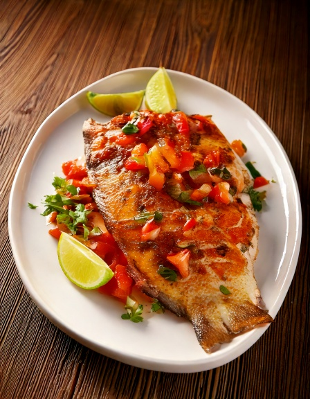
DinnerWhole grilled milkfish stuffed with tomato and onion -- real Filipino grilled-fish tradition, simple and smoky.
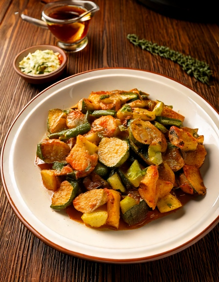
LunchA vegetable medley of squash, eggplant, okra, and bitter melon in a savory shrimp-paste sauce -- real Ilocano vegetable dish, full of fiber.
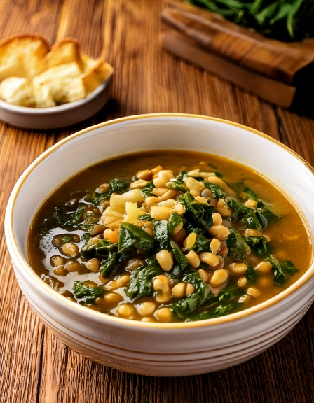
LunchA hearty mung bean stew with spinach -- real Filipino weeknight staple, plant-protein-rich and filling.
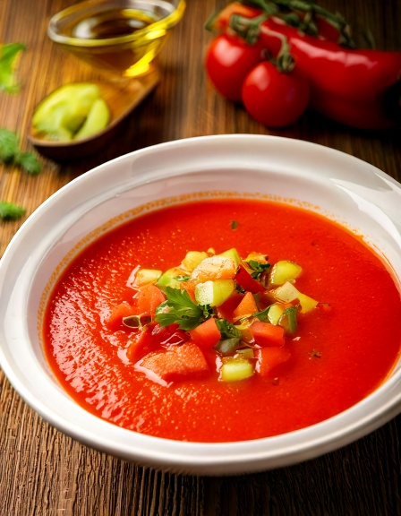
LunchA chilled raw tomato and vegetable soup -- real Andalusian summer classic, refreshing and full of fiber. Mostly chilling time, minutes of real work.
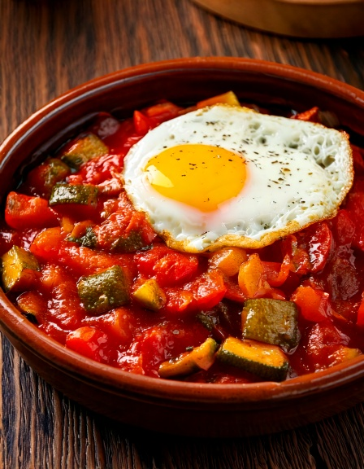
LunchA slow-cooked medley of zucchini, peppers, and tomato -- Spain's answer to ratatouille, from La Mancha.
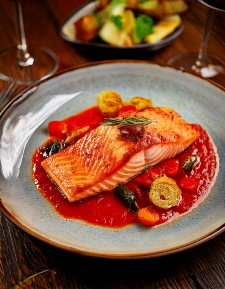
DinnerPan-seared salmon with a smoky almond-red pepper romesco sauce -- real Catalan flavor, rich in omega-3s.
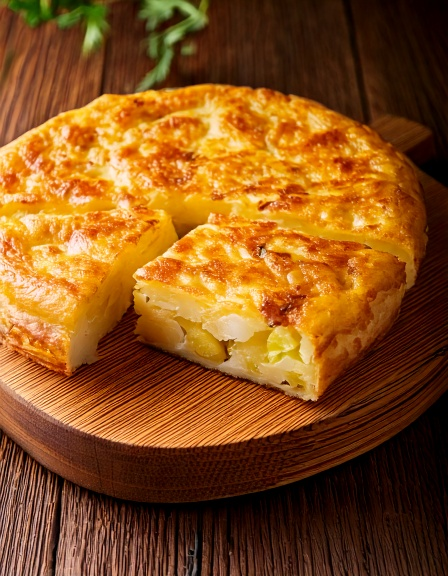
BreakfastThe classic Spanish potato and egg omelette, real-adapted for a lower glycemic load -- half the usual potato, extra egg, and cauliflower filling in the gap, so it keeps the real texture without the real spike.
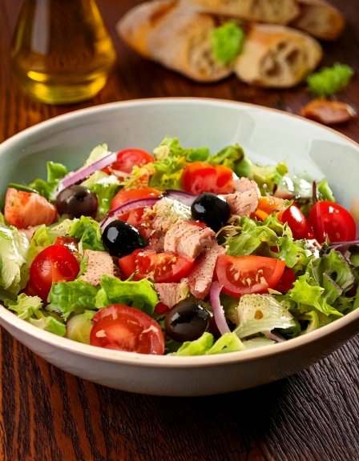
LunchA simple mixed salad with tomato, olives, and tuna -- real everyday Spanish lunch, light and satisfying.
Argentina's iconic grilled steak, topped with a bright herb-and-garlic chimichurri instead of a sugary sauce -- real parrilla tradition, served with salad instead of fries.
Argentina's classic hearty winter stew, rebalanced toward white beans, squash, and vegetables with less hominy and lean meat -- real locro comfort, higher in fiber and gentler on blood sugar.
A silky pureed pumpkin soup warmed with ginger and a touch of cream -- real Argentine cold-weather comfort food, portioned to keep it light.
Argentina's everyday breaded chicken cutlet, baked instead of fried and served with a fresh salad instead of fries -- real weeknight milanesa, lighter without losing the crunch.
A hearty lentil salad with a small amount of grilled chorizo for smoky flavor -- a real everyday Argentine lunch, built around a naturally slow-digesting legume.
Peru's national dish: fresh white fish 'cooked' in lime juice with red onion, cilantro, and chili -- real ceviche, naturally low-carb and light.
A quinoa-based twist on Peru's beloved Chinese-Peruvian fried rice -- real chifa flavor (soy sauce, egg, scallion) built on a whole grain instead of white rice.
A lighter take on Peru's beloved layered potato dish -- classic aji amarillo and lime flavor, with most of the mashed potato swapped for mashed cauliflower and a chicken salad filling.
Peru's iconic beef stir-fry with tomato, onion, and soy sauce -- real lomo saltado flavor, rebalanced with extra vegetables and no fries or white rice.
 Lunch
Lunch
A comforting beef and noodle soup with a hint of milk and oregano -- real sopa criolla warmth, made with whole wheat noodles and extra vegetables to keep it gentler on blood sugar.
Bogotá's beloved chicken and potato soup with corn and the traditional guascas herb -- real ajiaco comfort, rebalanced with more chicken and vegetables and a smaller potato portion.
Colombia's hearty chicken and root vegetable stew with cilantro and scallion -- real Sunday-family sancocho, rebalanced toward chicken and squash with less plantain and yuca.
A simple, real Colombian side salad of ripe avocado, tomato, and lime -- light, fresh, and naturally low in carbs.
A simple pan-seared fish fillet with lime and garlic, served with a fresh tomato-onion salad -- real Colombian coastal cooking, light and quick.
A real Colombian home-style lentil stew with tomato, cumin, and cilantro -- everyday comfort food, naturally slow-digesting and high in fiber.
Chile's celebrated coastal fish soup, made famous by poet Pablo Neruda -- real congrio (or any firm white fish) simmered with tomato, carrot, and cilantro in a light broth.
Chile's classic summer table salad -- sliced tomato and thinly cut onion with cilantro and oil, real everyday Chilean simplicity.
 Dinner
Dinner
Chile's iconic layered corn and beef casserole, topped with a fresh corn crust -- real pastel de choclo comfort, made with lean beef and no added sugar in the topping.
 Dinner
Dinner
A simple, real Chilean weeknight dinner -- oven-roasted chicken thighs with garlic and oregano, served alongside sautéed green beans.
A traditional Chilean one-pot mash of squash, beef, and vegetables -- real charquicán warmth, rebalanced toward squash and green beans with less potato and corn.
Ecuador's tangy tomato-based shrimp ceviche, distinct from its Peruvian cousin -- real coastal flavor, naturally light and protein-rich.
Ecuador's beloved fish soup with pickled red onion and cilantro -- real encebollado comfort, rebalanced with a smaller yuca portion and more fish.
A real Andean-style salad built on quinoa, one of Ecuador's traditional highland grains, with creamy avocado, corn, and lime.
 Dinner
Dinner
Ecuador's classic cilantro-braised chicken stew -- real seco flavor, served with extra vegetables instead of the traditional heaping side of rice.
A lighter take on Ecuador's beloved potato-and-cheese soup -- real locro warmth and avocado garnish, with most of the potato swapped for cauliflower.
Uruguay's iconic steak sandwich, deconstructed onto a plate -- real chivito toppings (steak, egg, tomato, olives) over a bed of greens instead of a bun.
A real, everyday Uruguayan chickpea salad with bell pepper, onion, and parsley -- simple, hearty, and naturally slow-digesting.
 Dinner
Dinner
A simple grilled fish fillet served with a fresh Uruguayan-style salad -- real coastal simplicity, light and quick for a weeknight.
A real Uruguayan tomato-based fish stew with bell pepper and white wine -- everyday coastal comfort, kept light and vegetable-forward.
Uruguay's traditional boiled dinner of beef and vegetables -- real puchero comfort, rebalanced with more cabbage and green beans and a lighter hand on potato and squash.
Paraguay's beloved savory cornbread, despite its name not actually a soup -- real sopa paraguaya flavor, made with less cornmeal and more cottage cheese and egg for protein.
Paraguay's real chicken soup studded with small cornmeal-and-cheese dumplings -- true vori vori comfort, with smaller dumplings and a vegetable-packed broth.
A real, simple Paraguayan bean salad with tomato, onion, and a light vinaigrette -- naturally hearty and slow-digesting.
A simple, real Paraguayan Sunday dinner -- oven-roasted chicken with garlic and oregano, alongside roasted seasonal vegetables.
A real Paraguayan home-style lentil stew with tomato, bell pepper, and cumin -- everyday comfort food, naturally slow-digesting and high in fiber.
Bolivia's beloved creamy peanut soup with beef and vegetables -- real sopa de maní comfort, served without the traditional fried potato straw topping.
 Lunch
Lunch
A real Bolivian highland salad built on quinoa -- the grain Bolivia is famous for growing -- with tomato, corn, and lime.
Bolivia's iconic mixed meat and vegetable plate -- real pique a lo macho flavor (beef, sausage, onion, chili), served over roasted vegetables instead of a mountain of fries.
 Dinner
Dinner
Fresh Lake Titicaca-style trout, pan-seared with garlic and lime -- real Bolivian highland cooking, light and quick.
A real Bolivian chili-broth pork stew -- traditional fricasé warmth, made with lean pork and a lighter hand on fat, served with extra vegetables instead of the usual bread.
Venezuela's national dish -- shredded beef, black beans, and plantain -- rebalanced with a smaller plantain portion and a fresh side salad in place of white rice.
Venezuela's beloved chicken and avocado arepa filling, served in crisp lettuce wraps instead of a corn arepa -- real reina pepiada flavor, naturally light.
A creamy pumpkin soup with a hint of coconut milk -- real Venezuelan auyama comfort, portioned to keep it light.
A simple pan-seared fish fillet with garlic and lime, served with avocado, tomato, and cilantro -- real coastal Venezuelan simplicity.
A real Venezuelan coastal seafood stew with tomato, bell pepper, and coconut milk -- naturally low in carbs and rich in lean protein.
Nicaragua's everyday rice-and-beans breakfast -- real gallo pinto flavor, rebalanced toward more beans and less rice.
Nicaragua's classic yuca, pork, and cabbage salad plate -- real vigorón flavor, made with baked pork instead of fried chicharrón and a smaller yuca portion.
A real, comforting Nicaraguan red bean soup with onion, bell pepper, and cumin -- everyday home cooking, naturally slow-digesting.
A real Nicaraguan whole-fish dish inspired by the fried fish of Tipitapa, made grilled instead of deep-fried and topped with fresh cabbage and onion.
A real Nicaraguan shredded beef and cornmeal stew with mint and orange -- traditional indio viejo comfort, made with a lighter hand on the corn masa and extra vegetables.
Cuba's iconic shredded beef in tomato and pepper sauce -- real ropa vieja flavor, served with a fresh side salad instead of white rice.
A real Cuban ground beef hash with olives, capers, and tomato -- classic picadillo flavor, with less raisin content and no rice served on the side.
A simple, real Cuban side salad of avocado, tomato, and red onion with a light vinaigrette -- naturally low in carbs and fresh.
A pan-seared fish fillet topped with Cuba's real garlic-and-citrus mojo sauce -- classic Cuban flavor, naturally light and quick.
Cuba's classic black bean stew with bell pepper, cumin, and a splash of vinegar -- real potaje comfort, naturally slow-digesting and fiber-rich.
A real Dominican coastal dish -- fish simmered in a light coconut, tomato, and bell pepper sauce -- naturally low in carbs and rich in flavor.
A real, everyday Dominican side salad of lettuce, tomato, cucumber, and avocado with a light vinaigrette -- fresh and naturally low in carbs.
The Dominican Republic's everyday stewed red beans with sofrito and squash -- real habichuelas guisadas comfort, naturally slow-digesting.
A real Dominican everyday braised chicken with sofrito, olives, and tomato -- true pollo guisado flavor, served with vegetables instead of white rice.
A real Dominican baked whole red snapper with garlic, lime, and roasted vegetables -- coastal comfort, naturally light.
A real Puerto Rican roast chicken seasoned with a homemade adobo and sofrito-style sazón -- true island flavor, naturally light and low-carb.
Puerto Rico's classic salt cod salad with tomato, onion, and avocado -- real ensalada de bacalao flavor, made with a lighter hand on oil and salt.
A real Puerto Rican pan-seared fish marinated in a tangy vinegar, onion, and pepper escabeche -- naturally light and low in carbs.
Puerto Rico's everyday stewed pink beans with sofrito, recao, and calabaza -- real habichuelas guisadas comfort, naturally slow-digesting and fiber-rich.
A real Puerto Rican beef stew with sofrito, olives, and carrots -- true carne guisada comfort, rebalanced with more vegetables and a smaller potato portion.
El Salvador's beloved stuffed corn cakes -- real pupusa flavor, made smaller with a higher bean-to-masa ratio and served with tangy curtido cabbage slaw.
Costa Rica's everyday combo plate -- real casado flavor (grilled protein, beans, cabbage salad, plantain) with a smaller rice portion and extra vegetables.
A real, comforting Central American black bean soup with onion, cumin, and a touch of sour cream -- everyday home cooking, naturally slow-digesting.
A simple pan-seared fish fillet with lime and garlic, served with avocado and tomato -- real Central American coastal simplicity, light and quick.
A real Central American braised chicken with tomato, bell pepper, and cilantro -- everyday home cooking, served with vegetables instead of white rice.